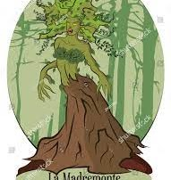

Desde hace mucho tiempo en los montes hadados de Colombia habita la Madre Monte o Madre de los Cerros o Madre de la Selva o Fantasma del monte; para unos es un espectro, para otros un espíritu y para muchos la diosa que creó las alturas sagradas de éstas tierras, en donde esconde sus tesoros quiméricos ambicionados, buscados pero no hallados. La tradición oral dice que la Madre Monte es una mujer muy alta, que sus cabellos son enredaderas, que sus orejas son hojas de begonia y que sus ojos son dos girasoles, que su nariz parece un pico de águila, sus lunares son conchas de caracoles. Se afirma que la Madre Monte usa un gran sombrero gris adornado con plumas blancas, negras, doradas, azules y rozadas. Dicen que su cuerpo es sensual y que está cubierto con musgo verde, que cubre los pezones de sus cántaros de miel con rosas, azucenas o claveles los cuales son visitados por colibríes y picaflores para chupar su néctar. Dicen que su cinturón es de bejucos de cobre y la hebilla es de plata con incrustaciones de piedras preciosas. Se afirma que su monte de venus está protegido por espinas agudas puyas de erizo, que usa sandalias de fique de oro. La Madre Monte a lo largo de cada una de sus extremidades superiores tiene enroscada una serpiente; que en una de sus manos empuña una varita mágica y en la otra una descomunal luciérnaga que le sirve de linterna. Ella habla con los animales, con los árboles, con los vientos a quienes cuida y defiende porque son sus hijos, hermanos y amigos. La tradición cuenta que la Madre Monte tiene su ejército de árboles y entre ellos hay soldados, tenientes, capitanes, coroneles y generales y que ella es la generalísima comandante en jefe. En los cuarteles, batallones y brigadas del ejército de la Madre Monte, hay árboles guerreros, unos narcotizan, otros producen alucinación, algunos hechizan, muchos aplastan y los árboles que caen en combate pudren a los depredadores que los tocan y van aumentando la temperatura de modo que si todos los bosques fuesen talados o quemados, todos los seres vivos en la tierra morirían calcinados y asfixiados. También hacen parte del ejército de la Madre Monte las plantas carnívoras, las que adormecen, las que lanzan flechas, las que hieren con espinas, las que envenenan, las que producen alergias y las que derraman sangre. Además ella tiende trampas a los enemigos invasores, quienes caen en pantanos, en arenas movedizas o por acantilados o quedan atrapados en redes de bejucos o pegados en estalagmitas y en telarañas.
